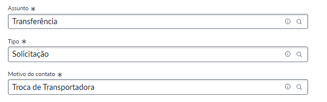

Troca de transportadora
A tabulação Troca de Transportadora deve ser utilizada quando a farmácia relatar erros recorrentes com a transportadora atual, como alto número de extravios, falta de coleta ou atrasos retirada dos pedidos.
Informações necessárias:
🔹 Ao menos 5 pedidos recentes que tenham tido falta/atraso na coleta
🔹 Nome da transportadora responsável
🔹 Informações sobre alocações realizadas
Para que seja solicitado a melhoria/troca da transportadora é importante que o problema seja recorrente, pois o time de transportes não atua se a transportadora estiver atuando conforme contrato
Como abrir a solicitação

Pontos importantes
👉 É importante que a abertura da solicitação seja realizada somente quando existe um problema diretamente ligado a transportadora, e não a um motoboy específico, não podemos sugerir essa troca.
👉Informar à filial que essa tratativa pode demandar um prazo maior, pois será necessário que o time responsável avalie possíveis ações de melhoria junto à transportadora ou busque uma nova transportadora disponível para a região.